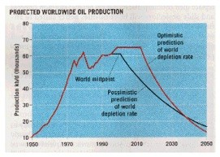

| Feature Article - October 2000 |
| by Do-While Jones |
One of the arguments we sometimes hear is this one:
| Fossil dating is used most frequently by geologists working in the oil mining industry. If the predictions made by the fossil dating methods were not good, then they would not find oil. Oil exploration geologists are generally pretty successful. Are they just lucky or is the theory of evolution capable of making useful predictions? 1 |
It isn't an argument you hear very often because it isn't a very good one. The statement above was made by someone in a news group. We haven't heard it touted by any serious evolutionist. But although the argument is rarely stated explicitly, it is sometimes implied. Answers In Genesis, commenting on a book we have not read says,
| Here Plimer implies that the large ages assigned to rocks must be correct or else oil companies would not find oil. 2 |
According to the U.S. Geological Survey
| We study our Earth for many reasons: to find water to drink or oil to run our cars or coal to heat our homes, to know where to expect earthquakes or landslides or floods, and to try to understand our natural surroundings. Earth is constantly changing--nothing on its surface is truly permanent. Rocks that are now on top of a mountain may once have been at the bottom of the sea. Thus, to understand the world we live on, we must add the dimension of time. We must study Earth's history. 3 |
Is it really true that we have to understand Earth's history to find oil?
Sometimes people reach the right conclusion for the wrong reason. Let's use a silly example. We all know that leprechauns store their gold at the end of a rainbow. Fewer people know that leprechauns store their oil underground near Bakersfield, California. There certainly is oil under the ground around Bakersfield, but that doesn't prove that leprechauns put it there.
You may know where oil is without knowing how it got there. Oil is often trapped in porous rock under non-porous rock. So, if you can determine what kinds of rock are below you, you may be able to find oil even if you don't know how those rocks were formed.
Furthermore, we should point out that one might argue with the assertion, "Oil exploration geologists are generally pretty successful". They aren't as "lucky" as you might expect. Forty years ago it was written,
| Eight of every nine wells drilled in an area that has never before produced oil are dry. 4 |
That was an 11% success rate. Now we have more sensitive instruments, and computers with better algorithms for analyzing the data from those instruments. But, as of five years ago,
| 80 percent or more of the wildcats, exploratory wells drilled in untried or unproven regions, result in dry holes (wells that fail to strike oil or gas). 5 |
So, the modern success rate is still less than 20%. You could bet against the geologists, laying 4 to 1 odds, and make a profit in the long run.
The geologists who believe in creation are no more or less successful than the geologists who believe in evolution. They all use the same instruments, looking for the same kind of rock formations. It doesn't matter if they believe those rock formations were formed rapidly by the flood, or formed slowly over millions of years, or were carved by leprechauns. They can be dead wrong about the way rocks form, and why oil is found where it is, and still find the oil. The child who thinks the Easter bunny hid the eggs is no less likely to find them than the child who knows Mom and Dad hid them.
Dead DinosaursWe don't know why, but lots of people believe that oil comes from dead dinosaurs. Maybe it is because they have seen the Sinclair Dinosaur at 2,600 gas stations and convenience stores in twenty-two states in the West and Midwest. Or maybe it is because they have been taken for a ride through the Universe of Energy (sponsored by Exxon) at EPCOT Center. |
Scientists don't believe oil comes from dinosaurs, and haven't believed that for at least forty years.
How Petroleum Was Formed Organic Theory. No one really knows how petroleum was formed. Most scientists believe the organic theory. It says that petroleum was formed through millions of years in great oceans that covered many parts of the earth during prehistoric times. Tiny plants and animals lived in shallow water and along the coasts of seas, just as they do today. As these plants and animals died, their remains settled on the muddy bottoms of the oceans. Here, even smaller forms of life called bacteria caused them to decay. Fine sand and mud, called sediments, drifted down over the plant and animal matter. As these sediments piled up, their great weight pressed them into hard, compact beds, or layers, of sedimentary rock (See ROCK [Sedimentary Rock]). During this process, bacteria, heat, pressure, and perhaps other natural forces changed the plant and animal remains into oil and natural gas. Tiny drops of oil and bubbles of gas moved from the mud beds in which they were formed into other sedimentary rocks, usually sandstone or limestone. These porous rocks contain pores, or small openings, through which the oil moved. Through millions of years, layers of less porous sedimentary rock formed above the rock beds. This rock sealed the oil and gas into underground pools. Later, many of the ancient seas drained away through movements of the earth's crust, and dry land appeared above the petroleum deposits. 6 |
The story in a modern encyclopedia (Encarta 98) is so similar that it isn't worth repeating it.
| Notice that in recent years the production has been about 65 million barrels a day. Page 202 of the 1996 World Almanac said that the production in 1993 was 67.7 million barrels, which looks to be a little bit higher than shown on Discover's graph. |  |
Let's try to visualize just how much oil is being pumped out of the ground every day. An American football field (including the two end zones) is 360 feet by 160 feet (57,600 square feet). Soccer and rugby fields are about the same size. A barrel of oil is 5.6 cubic feet, so 67.7 million barrels of oil is equivalent to 379,120,000 cubic feet. So, oil sufficient to cover a football field with a layer of oil 6,600 feet high is being pumped out of the ground every day. That's 5.2 times as tall as the Empire State Building. (European readers might prefer to imagine a soccer field covered with oil 6.7 times as high as the Eiffel Tower.)
The Sinclair refinery near Rawlins, Wyoming, produces 60,000 barrels/day. 7 So, in just one year, that one refinery alone produces enough oil to cover a football field with 2,129 feet of petroleum products. Clearly, all that oil didn't come from dead dinosaurs.
Could it have come from decaying seaweed and plankton on the bottom of a shallow sea? That's hard to believe, too. There might be that much stuff on the bottom of a shallow sea, but most of it is eaten by scavengers before it is buried. The only way we can imagine for that much organic material to be buried by thousands of feet of sedimentary rock, is for an awful lot of mud to wash into the bottom of a shallow sea very rapidly.
|
Australian geologists, however, have doused the conventional wisdom by finding tiny drops of oil trapped in 3-billion-year-old rocks, nearly twice the age of the oldest known oil. ...
According to theory, oil forms within sediments chock full of plant and bacterial remains. As more sediments pile up, the biological debris gets gently heated, a process that cracks the long organic molecules into petroleum. Add too much heat, say the textbooks, and the oil will break down. The rocks in the Australian study had long ago reached temperatures of 200oC to 300oC, enough to degrade the oil in theory. 6 |
Their argument is that the oil should have broken down by now if it really were 3 billion years old. That's true, but they missed an even more important point. According to the theory of evolution, algae evolved less than 2 billion years ago. So, how do you get oil from algae in rocks that are 3 billion years old?
We believe that this is just further evidence that dating techniques are unreliable because they are based on incorrect assumptions. But evolutionists believe the rocks really are that old, so they have a problem making sense of it.
Gas and oil are usually under great pressure. Consequently, they eventually find a way to the surface. So, it is hard to understand how so much oil could have been trapped underground for millions of years.
On the surface, the argument that geologists who believe in evolution can find oil appears to give a clean explanation for the theory of evolution. But if you drill beneath the surface, you find a gooey mess. The more you refine it, the evolutionary explanation for oil becomes as volatile as gasoline. Just a little spark of intelligence is enough to blow it up. Science is against evolution.
| Quick links to | |
|---|---|
| Science Against Evolution Home Page |
Back issues of Disclosure (our newsletter) |
| Web Site of the Month |
Topical Index |
Footnotes:
1
http://killdevilhill.com/srchat/messages2/1134.html
(Ev+)
2
http://www.answersingenesis.org/docs/1668.asp
(Cr+)
discussing Ian Plimer's Telling Lies for God: Reason vs. Creationism, 1994, Random House Australia
(Ev).
3
http://pubs.usgs.gov/gip/fossils/intro.html
(Ev)
4
Word Book Encyclopedia, 1961, Vol. 14, pages 292-293
(Ev)
5
Cvancara, A Field Manual for the Amateur Geologist, 1995, John Wiley & Sons, Inc. page 250
(Ev)
6
Word Book Encyclopedia, 1961, Vol. 14, pages 297-300
(Ev)
7
www.sinclairoil.com/about_sinclair.htm
(Ev-)
8
Science News, November 7, 1998, "Squeezing Oil from Ancient Rocks", page 301, https://www.sciencenews.org/archive/earth-science-106
(Ev)